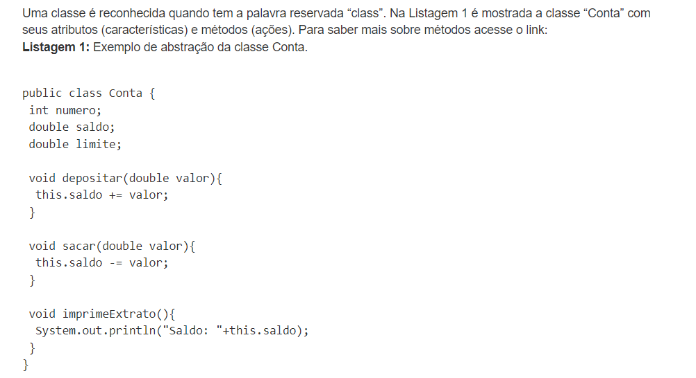
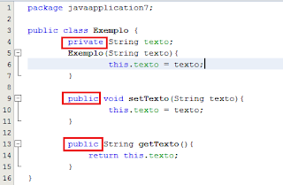
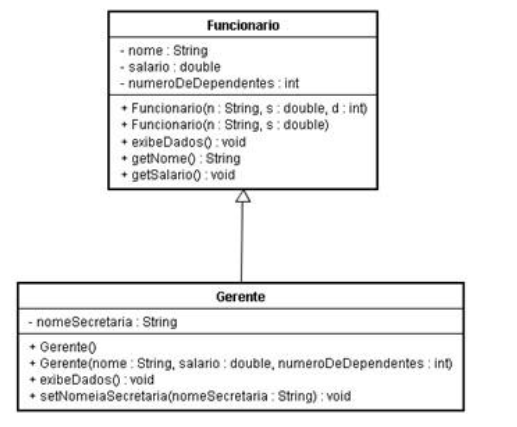
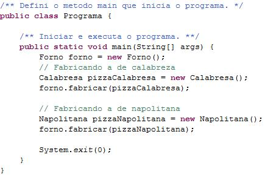

Pilares da Orientacao de Objetos.
A Programação Orientada a Objetos é fundamentada em quatro pilares principais que são essenciais para a sua implementação correta.
1. Abstração
Abstração é a capacidade de isolar as características essenciais de um dado objeto do mundo real e criar uma representação mais geral possível. Exemplo disso seria pegarmos o que há de mais genérico no ser humano e criarmos uma classe para representá-lo.
Exemplo disso seria pegarmos o que há de mais genérico no ser humano e criarmos uma classe para representá-lo.

2. Encapsulamento
O encapsulamento é o princípio que nos permite agrupar dados e os métodos que operam sobre esses dados em uma mesma entidade, a classe. A ideia é esconder a implementação detalhada dos métodos e expor apenas uma interface para interagir com os objetos. Isso promove a segurança e a modularidade, pois os detalhes internos do objeto são ocultados e só podem ser acessados através de métodos públicos.
3. Herança
As classes podem herdar atributos e funções de outras classes. Chamamos as classes que transferem comportamentos e atributos de superclasses; e chamamos as classes que herdam esses comportamentos e atributos de subclasses. Por isso, superclasses normalmente são definições mais genéricas de uma entidade, enquanto que as subclasses são definições mais específicas.

4. Polimorfismo
O polimorfismo é uma propriedade que tem como base a herança.Isto significa muitas formas ou comportamento variado. Através do polimorfismo uma classe pode criar objetos de outra, um método consegue ter comportamentos distintos.
